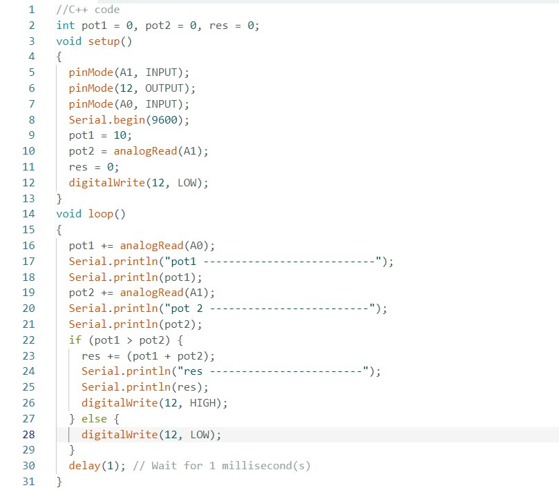

O que é o C++?
C++ é uma linguagem de programação de propósito geral, amplamente utilizada, que foi desenvolvida por Bjarne Stroustrup no início dos anos 1980 como uma extensão da linguagem C. É conhecida por sua eficiência e flexibilidade, e oferece suporte a diversos paradigmas de programação, incluindo programação procedural, orientada a objetos e programação genérica. As habilidades adquiridas no C++ são valiosas e transferíveis para outras linguagens de programação.
Código em C++
Utilizando IDE Arduíno imagem
Código C++ Texto
//C++ code
int pot1 = 0, pot2 = 0, res = 0;
void setup()
{
pinMode(A1, INPUT);
pinMode(12, OUTPUT);
pinMode(A0, INPUT);
Serial.begin(9600);
pot1 = 10;
pot2 = analogRead(A1);
res = 0;
digitalWrite(12, LOW);
}
void loop()
{
pot1 += analogRead(A0);
Serial.println("pot1 -----------------------------");
Serial.println(pot1);
pot2 += analogRead(A1);
Serial.println("pot2 -----------------------------");
Serial.println(pot2);
if (pot1 > pot2) {
res += (pot1 + pot2);
Serial.println("res -----------------------------");
Serial.println(res);
digitalWrite(12, HIGH);
} else {
digitalWrite(12, LOW);
}
delay(1); // Wait for 1 millisecond(s)
}